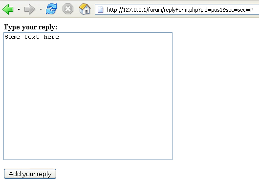

The Forum results.php page
This lesson is part of an ongoing Foruml tutorial. The first part is here: Build your own Forum, along with all the files you need. The previous lesson is here.
There's not too much code in the results.php page. All we need to do here is to INSERT a reply to a post into the correct database table. Open up the code, and we'll take a look at it.
The first thing to notice is the function at the top of the page – getReplySQL(
). This takes one argument – the section code for the forum.
After the function, we check to see if the form was submitted using the POST method:
if ($_SERVER['REQUEST_METHOD'] == 'POST') {
}
If this returns a value of true, then we grab that data from the form:
$secID = $_POST['h1'];
$posID = $_POST['h2'];
$memID = $_POST['h3'];
$repText = $_POST['post'];
We're grabbing all those HIDDEN values from the form (which had the NAMES h1, h2, and h3), as well as the text in the textarea (which had the NAME post).
The next three lines just add some single quotes. This is NOT how you'd want to do it in your own forum! There are security issues here, because you're grabbing text from a textarea and trying to INSERT it into a database. We covered the security issues in an earlier section, but try this exercise:
Exercise
Login to the forum with one of the username/passwords you saw earlier (these
are in the textfile called uandp.txt, in your forum folder). Reply
to the post "A Brand New Forum". You'll see this basic form:

If you just go ahead and click the button, the text Some text here should get added to the database.
But surround the text with single quotes. Type this:
'Some text here'
Now click the button. You should see the message "No results". This is because the code couldn't execute the SQL with those single quotes added. How would you solve this? Review the section on security, especially the parts about SQL injection attacks. Wasn't there something about magic quotes, and strip slashes? How would you use these to lessen a SQL injection attack?
Another secrurity issue to worry about is how much text to allow the user to type into the textarea. You can check how long a string is with the strlen( ) function. A good run-down on how to use this can be found in the PHP manual here:
http://uk.php.net/manual/en/function.strlen.php
A simple way to use this would be:
$strCount = strlen($repText);
if ($strCount > 255) {
print "too many characters in your reply";
}
else {
//Do the rest of the code here
}
This just prints an error message if the user types in more than 255 characters. (However, we've set the reply text field in the database tables to MEDIUMTEXT. This can hold far more characters than 255. If you're restricting users to 255 characters, then TINYTEXT would be a better option.)
But back to our (less than secure) code. We've just grabbed the data from the
FORM and placed it into variables:
$secID = $_POST['h1'];
$posID = $_POST['h2'];
$memID = $_POST['h3'];
$repText = $_POST['post'];
The secID will contain something like "secWP", the posID will contain something like "pos1", and the member ID is always "mem" plus a number (mem1, me2, etc). The $repText variable holds the reply the user typed in the textarea.
The next code we have is some date code:
$date_today = date("Y-m-d H:i:s");
$date_today = "'" . $date_today . "'";
The characters we're using between the round brackets of the date function mean we want the year first, then the month, then the day. These will be separated with the "-" character. We're also adding a time part that returns Hours, Minutes, and Seconds. The second line adds single quotes to the date, so we can use it in the SQL.
The next line is a call to the function at the top of the page:
$tableSQL = getReplySQL($secID);
The function returns SQL to be used against the database table. But it only returns part of the SQL we need:
$sql = "INSERT INTO wpreplies (threadID, memberID, reply, dateReplied) VALUES ";
In between the round brackets, we have the fields from the table. But we don't yet have the VALUES we need to insert into these fileds. The next line in our code adds the values. It's a long line that spills over into two on these pages:
$tableSQL = $tableSQL . "(" . $posID . "," . $memID . "," . $repText . "," . $date_today . ")";
We're building up the $tableSQL string variable here. It already holds the first part of the SQL we need. We're now adding the VALUES. We need the round brackets, the data from the variables, and the commas. After the line is executed, the string would be something like this:
"INSERT INTO wpreplies (threadID, memberID, reply, dateReplied) VALUES (pos1, mem1, "My Reply", "2006-10-22 13:30:14")"
After we open a connection to the database, we try to execute the query:
$result = mysql_query($tableSQL);
Then we check to see if the SQL is executed successfully:
if ($result) {
print "Your Reply has been added to the Forum."
. "<BR>";
print "<A HREF = forumTest.php>Back to the forum</A>"
. "<BR>";
}
else {
print "no results" . "<BR>";
}
And that's all we need to do on the this page: try to insert the reply into
a reply table in the database. Some of the error checking has been left out,
so as not to confuse the main techniques used. But you should implement the
error checking in your own code. Especially the checks to ward off attacks on
your database!
In the next part, we'll see how to write the code to post a Topic on the Forum